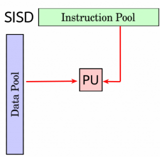
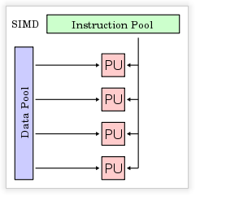

SISD (Single Instruction stream, Single Data stream)
Flujo único de instrucciones y flujo único de datos.
Este el concepto de arquitectura serie de Von Neumann donde, en cualquier momento,
sólo se está ejecutando una única instrucción. A menudo
a los SISD se les conoce como computadores serie escalares. Todas las maquinas SISD poseen un
registro simple que se llama contador de programa que asegura la ejecución en serie
del programa. Conforme se van leyendo las instrucciones de la memoria, el contador de programa
se actualiza para que apunte a la siguiente instrucción a procesar en serie. Prá
cticamente ningún computador puramente SISD se fabrica hoy en día ya que la
mayoría de procesadores modernos incorporan algún grado de paralelizacion como
es la segmentación de instrucciones o la posibilidad de lanzar dos instrucciones a un
tiempo (superescalares).

MISD (Multiple Instruction stream, Single Data stream)
Flujo múltiple de instrucciones y único flujo de datos.
Esto significa que varias instrucciones actúan sobre el mismo y único
trozo de datos. Este tipo de máquinas se pueden interpretar de dos maneras.
Una es considerar la clase de máquinas que requerirían que unidades de
procesamiento diferentes recibieran instrucciones distintas operando sobre los mismos
datos. Esta clase de arquitectura ha sido clasificada por numerosos arquitectos de
computadores como impracticable o imposible, y en estos momentos no existen ejemplos
que funcionen siguiendo este modelo.
